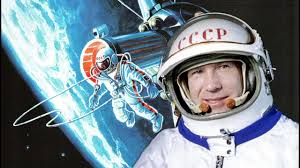

1957
4 октября 1957 года — запуск первого искусственного спутника Земли (Спутник-1)
Первый в мире искусственный спутник, запущенный СССР, стал началом космической эры. Аппарат, весивший 83,6 кг, был выведен на орбиту ракетой-носителем Р-7. Спутник-1 передавал радиосигналы, которые фиксировались на Земле. Это событие продемонстрировало техническое превосходство СССР и дало толчок к началу космической гонки между Советским Союзом и США.
1957
3 ноября 1957 года — первый полет животного в космос (Лайка)
Второй искусственный спутник Земли стал первым космическим аппаратом, доставившим живое существо на орбиту. Собака Лайка отправилась в космос в рамках эксперимента по изучению воздействия невесомости на организм. Хотя спутник не был рассчитан на возвращение, это стало важным шагом в подготовке пилотируемых полетов.
1961
12 апреля 1961 года — первый полет человека в космос (Юрий Гагарин)
Космический корабль "Восток-1", пилотируемый Юрием Гагариным, совершил первый орбитальный полет вокруг Земли. Полет длился 108 минут, за которые Гагарин стал первым человеком, увидевшим Землю из космоса. Его историческое достижение стало символом успеха советской космической программы.
1961
6 августа 1961 года — первый длительный полет человека в космос (Герман Титов)
На борту корабля "Восток-2" Герман Титов провел в космосе более суток, совершив 17 оборотов вокруг Земли. Этот полет позволил изучить влияние длительного пребывания в невесомости на организм человека и подтвердить возможность более долгих миссий.

1963
16 июня 1963 года — первая женщина в космосе (Валентина Терешкова)
На корабле "Восток-6" Валентина Терешкова стала первой женщиной, отправившейся в космос. Её миссия длилась почти трое суток, за которые она совершила 49 оборотов вокруг Земли. Этот полет доказал, что женщины способны выдерживать те же нагрузки, что и мужчины, в условиях космических миссий.
1965
18 марта 1965 года — первый выход человека в открытый космос (Алексей Леонов)
Алексей Леонов на корабле "Восход-2" впервые вышел за пределы космического аппарата и провел 12 минут в открытом космосе. Для этого был разработан специальный скафандр и космический шлюз. Это достижение открыло путь для выполнения работ за пределами космических аппаратов.

1967
23 апреля 1967 года — первый трагический случай в космонавтике (Владимир Комаров)
Полет корабля "Союз-1" закончился трагедией: из-за отказа системы парашютов при возвращении космонавт Владимир Комаров погиб. Это событие стало первым случаем гибели человека во время космической миссии и привело к пересмотру многих технических решений.
1970
17 ноября 1970 года — успешная доставка "Лунохода-1" на Луну
"Луноход-1" стал первым управляемым аппаратом, исследующим поверхность Луны. Он передал на Землю данные о составе грунта, температуре и рельефе Луны. Управление аппаратом осуществлялось дистанционно, что стало большим достижением для автоматизированных миссий.
1971
19 апреля 1971 года — запуск первой орбитальной станции "Салют-1
"Салют-1" была первой в мире долговременной орбитальной станцией, предназначенной для проведения научных экспериментов в космосе. Экипаж первой экспедиции не смог пристыковаться к станции, но последующие миссии успешно работали на её борту.
1975
15 июля 1975 года — совместная космическая миссия "Союз-Аполлон"
Впервые в истории космонавтики был реализован совместный проект СССР и США. Космические корабли "Союз-19" и "Аполлон" состыковались на орбите, а их экипажи провели совместные научные эксперименты. Это событие стало символом разрядки в холодной войне.
1986
20 февраля 1986 года — запуск космической станции "Мир"
"Мир" стал первой модульной космической станцией, на которой велись долговременные эксперименты в условиях невесомости. В течение 15 лет работы станции проводились исследования в области медицины, биологии и физики. "Мир" стал важным этапом подготовки к созданию Международной космической станции.
1988
15 ноября 1988 года — полет космического челнока "Буран"
Советский космический челнок "Буран" совершил автоматический орбитальный полет без экипажа. Он облетел Землю дважды и успешно вернулся на Землю. Это был единственный полет в рамках программы, которая была закрыта из-за экономических трудностей.
1998
20 ноября 1998 года — запуск первого модуля Международной космической станции (МКС)
Россия внесла вклад в строительство МКС, запустив модуль "Заря", который стал основой для дальнейшей сборки станции. МКС стала крупнейшей космической лабораторией, работающей на орбите.
2001
28 апреля 2001 года — первый полет космического туриста (Деннис Тито)
Россия отправила первого космического туриста, американского миллиардера Денниса Тито, на корабле "Союз ТМ-32". Полет продолжался 8 дней, из которых 6 он провел на борту МКС.
2003
"Союз" становится основным средством доставки экипажей на МКС
После катастрофы шаттла Columbia, российские корабли "Союз" стали единственным транспортом для доставки экипажей на Международную космическую станцию.

2021
Запуск модуля "Наука" для МКС
Россия запустила новый модуль для Международной космической станции. Модуль "Наука" предназначен для проведения экспериментов и обеспечения дополнительных жилых помещений для экипажа.
2023
20 апреля 2023 года — выход первого художественного фильма на борту МКС
Состоялся выход фильма "Вызов", снятого на борту МКС. Это событие продемонстрировало новые возможности применения космоса в сфере искусства.